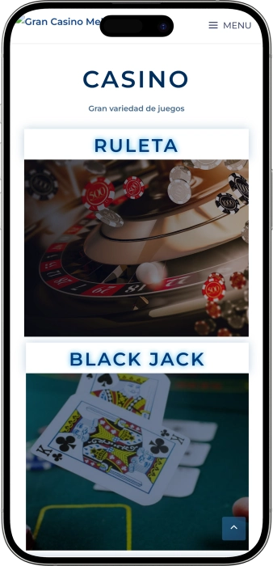

Oferta exclusiva de bienvenida de
Oferta exclusiva de bienvenida de
Gran Casino Melilla — juegos, ambiente, normas y ocio
Los mejores casinos
Detalles de bonificación
Casino
Bonos
Rate
Giros gratis
Más info
Conseguir
Ventajas
-
Slots multilínea: apuestas desde 0,20€
-
Ruleta americana: ritmo alto, premios rápidos
-
Black jack: estrategia, rachas de ganancia
-
Póker: torneos, botes con tensión
-
Coctelería: plan nocturno completo
-
Ubicación en marina: vistas y acceso
-
Control de acceso: ambiente seguro
- Gran Casino Melilla destaca por unir juegos de mesa clásicos con una zona de máquinas moderna, fácil de disfrutar a cualquier ritmo. El entorno nocturno junto al puerto deportivo convierte la visita en una experiencia de ocio completa.
Gran Casino Melilla App


À propos Gran Casino Melilla
El casino se diferencia por su ubicación en la marina y un ambiente nocturno muy social, ideal para combinar juego y ocio. Las cifras son ejemplos típicos de promociones y pueden variar según campañas y calendario.
- Jackpot hasta 50 000€.
- Bono de fichas hasta 100€.
- Torneo de póker 5 000€ GTD.
Gran Casino Melilla es un punto de ocio nocturno donde se combinan juego, socialización y comodidad. El interior suele transmitir un estilo actual que invita a jugar sin prisas. Es fácil alternar entre máquinas y mesas en una misma visita.
La ruleta y el black jack aportan la experiencia clásica de casino, mientras el póker añade un componente competitivo. El acceso suele cuidarse con normas claras para mantener un ambiente agradable. El servicio está pensado para que los principiantes se sientan acompañados y los jugadores habituales encuentren rutinas conocidas. La zona de bar permite hacer una pausa, tomar algo y volver al juego con otra energía. A lo largo de la semana se organizan actividades que renuevan la experiencia. El lugar encaja tanto para una visita corta como para una noche completa combinando juego y descanso. En conjunto, se vive como un espacio de entretenimiento donde el juego es parte de un plan social.
Gran Casino Melilla: estilo, ambiente y ritmo nocturno
Gran Casino Melilla se percibe como un casino urbano de corte moderno, con un enfoque claro en el ocio nocturno y un toque festivo equilibrado. En el interior suelen destacar la iluminación cuidada, el confort y zonas pensadas para alternar juego y descanso. El ambiente encaja tanto para parejas como para grupos que buscan combinar emoción y conversación. El tono general no es excesivamente formal, pero sí “arreglado”, para que la experiencia se mantenga agradable. La ubicación junto a la marina invita a empezar la noche con un paseo y terminarla con juego o coctelería.
El horario en este tipo de casino suele concentrarse en la tarde-noche y la madrugada. En la práctica, el momento más activo llega tras la cena, cuando el público busca ritmo y entretenimiento. Algunos días pueden tener funcionamiento más reducido y otros ampliarse, especialmente en fines de semana. A veces distintas áreas (máquinas y mesas) pueden manejar franjas diferentes, lo cual beneficia a quienes quieren comenzar antes. Para una visita sin prisas conviene considerar el control de acceso y el tiempo de acomodación.
La parte de bar es clave porque muchos visitantes no vienen solo a jugar, sino a pasar un buen rato completo. Cócteles, bebidas clásicas y opciones ligeras permiten hacer pausas sin salir del ambiente. El formato nocturno suele acompañarse de música de fondo y un clima social más vivo. También es una buena zona para acompañantes que prefieren observar y charlar. Esa posibilidad de “descansar sin desconectar” es uno de los grandes atractivos.
En alojamiento, un casino urbano normalmente no depende de un hotel propio, pero gana por la cercanía a hoteles y apartamentos en la zona. Para el visitante es práctico: se puede ir sin grandes desplazamientos y volver caminando o en taxi. Para el público local, la ventaja está en integrarlo en un plan habitual: cena, paseo, copa y juego. Si se desea prolongar la estancia, suele haber alternativas de hospedaje cercanas de distintos niveles. El resultado es una experiencia flexible y fácil de organizar.
Los eventos suelen girar en torno al póker, noches temáticas y acciones de temporada. Los torneos aportan sensación de “cita especial” y un componente competitivo más marcado. En fechas concretas pueden aparecer programas festivos o propuestas especiales en el bar que suman motivos para regresar. La diversión se presenta normalmente con estilo, sin ruido excesivo, para no romper el foco de la sala. Ese equilibrio entre juego y ambiente social funciona muy bien para repetir.
En promociones y programas de fidelización, los casinos presenciales suelen premiar la recurrencia, la participación en torneos y la actividad en mesas o máquinas. Habitualmente se traduce en invitaciones, detalles del bar, condiciones especiales en sesiones puntuales o acumulación dentro de un sistema de club. Para el cliente, esto significa ventajas acumulables sin sensación de presión. Las condiciones varían por calendario y conviene entenderlas como un plus al ocio. En conjunto, Gran Casino Melilla se vive como un plan nocturno cómodo con el juego como protagonista compartido.
Servicio y dinero en Gran Casino Melilla: personal, pagos y cobros
En un casino presencial el personal suele trabajar con protocolos claros: control de acceso, apoyo en sala, operaciones de caja y gestión de mesas. Crupieres y asistentes supervisan el ritmo, la corrección de apuestas y el orden, además de orientar a quienes llegan por primera vez. En el bar se prioriza la rapidez y el confort para que las pausas sean agradables. La seguridad es parte esencial del funcionamiento y de la experiencia del cliente. Por eso, respetar normas y trato cordial con el equipo influye directamente en cómo se vive la noche.
En idiomas, lo habitual es atención en español y, en épocas con más visitantes, presencia de inglés básico para gestiones comunes. Para cuestiones más específicas —torneos, caja o condiciones particulares— suele intervenir personal de supervisión o administración. Si se viaja en grupo, ayuda llevar preparadas frases clave o usar traducción en el móvil. La mayoría de dudas se resuelven rápido: cambio a fichas, inscripción a torneos, mesas disponibles. El estilo de comunicación en casino suele ser directo y práctico, acorde al ritmo de juego.
La moneda de referencia es el euro y muchas operaciones se canalizan por caja: compra de fichas, cambios y cobro de premios. Los métodos de pago suelen incluir efectivo y tarjetas bancarias, con variaciones según política interna y límites. En pagos con tarjeta pueden existir topes y comprobaciones de identidad para reforzar seguridad. En operaciones elevadas es normal que se apliquen verificaciones adicionales. Una buena práctica es planificar presupuesto y contar con un método alternativo por si surge alguna restricción.
Los cajeros y el acceso a efectivo suelen estar pensados para facilitar la experiencia sin desplazamientos largos. Normalmente hay señalización clara hacia caja y cajero, y el personal puede guiar si hace falta. Si se llega con otra divisa, lo más cómodo suele ser operar ya en euros, usando servicios bancarios o de cambio en la ciudad. Cambiar previamente suele aportar más claridad sobre el tipo de cambio y reduce fricciones durante la visita. Así se entra más rápido en el plan de ocio y juego.
El cobro de ganancias se realiza normalmente en caja: se entregan fichas, se muestra documentación si procede y se recibe efectivo o se gestiona el pago según normas del casino. Para importes pequeños el proceso suele ser ágil; para importes altos puede requerirse identificación adicional y registro de la operación. Esto responde a estándares de transparencia financiera y protección del cliente. En póker pueden existir procedimientos específicos según sea cash o torneo y según el organizador del evento. La mejor manera de evitar demoras es seguir las indicaciones de caja con calma.
La fiscalidad de premios depende del perfil del jugador y del contexto, por lo que conviene tratarlo con prudencia. En el sector es habitual que determinados importes impliquen documentación adicional o trámites de declaración. El casino normalmente no ofrece asesoría fiscal personalizada, aunque puede explicar qué documentación se necesita para pagar. Si se planea jugar con importes relevantes, es recomendable conocer los principios generales aplicables a su caso y, si hace falta, consultar a un profesional. Así se protege el disfrute del juego y se evitan sorpresas tras un premio importante.
Normas de visita en Gran Casino Melilla: vestimenta, acceso y comodidad
La visita a Gran Casino Melilla suele empezar con control de acceso, por lo que conviene llevar un documento identificativo. La entrada está reservada a mayores de edad y se verifica de forma estricta. Se mantiene un estilo de vestimenta cuidado para conservar un ambiente cómodo en sala. En hombres, normalmente se evita el look de playa, calzado abierto y ropa excesivamente deportiva. En el interior suele aplicarse la prohibición de fotos para proteger privacidad y seguridad. Se espera conducta tranquila, sin agresividad, y respeto a las indicaciones del personal. Si se va a jugar en mesas, ayuda conocer reglas básicas para no frenar el ritmo. En una primera visita es útil llegar antes del pico nocturno para ubicarse con calma. Por la noche la afluencia puede subir, así que conviene contar con algunos minutos para entrada y caja. Llegar a pie desde la zona de la marina o en taxi suele ser lo más práctico. En coche, es importante contemplar aparcamiento y accesos en el entorno portuario. En general, las normas buscan una sala segura y agradable para todos.
- • Código de vestimenta: estilo casual arreglado; se evitan chanclas, prendas de baño y chándal; en hombres suelen no admitirse camisetas de tirantes.
- • Condiciones de entrada: 18+; documento obligatorio; posibles comprobaciones adicionales en casos puntuales.
- • Prohibiciones: fotografías y vídeo; conductas violentas; objetos que comprometan seguridad; actitudes que perturben a otros clientes.
- • Cómo llegar: a pie por la marina; taxi como opción nocturna cómoda; en coche siguiendo accesos y normas del área portuaria.
- • Aparcamiento: habitualmente se usa parking urbano cercano; en horas punta conviene llegar con antelación.
- • Consejos útiles: efectivo para apuestas pequeñas y tarjeta como respaldo; no apurar la última hora para cerrar juego y cobrar con calma.
Programa de fidelidad de Gran Casino Melilla: niveles, bonos y ventajas
En casinos presenciales, la fidelización suele basarse en una inscripción de club que registra visitas y actividad del cliente. Para el jugador, el beneficio es claro: cuanto más frecuente es la visita y más constante la actividad, más atractivo se vuelve el paquete de ventajas. A menudo se acumulan puntos por juego en máquinas y por actividad en mesas, y esos puntos pueden canjearse por detalles, ofertas o acceso a acciones especiales. Una parte muy valorada son las invitaciones a torneos, noches privadas y eventos de temporada. Normalmente la inscripción es sencilla: se gestiona con el personal y se verifica identidad. Después, el cliente recibe una tarjeta o un perfil digital para acumular beneficios. Las reglas de puntos y recompensas pueden variar según el calendario, por lo que a los habituales les conviene seguir la programación. Los niveles de estatus aportan sensación de “club”: a mayor nivel, mayor prioridad y más propuestas exclusivas. La fidelidad no elimina la responsabilidad: se mantiene el enfoque de juego responsable y cumplimiento de normas. A continuación se muestra un ejemplo de estructura típica con cifras que suelen verse en programas presenciales; las condiciones reales dependen de las normas y promociones vigentes.
Condiciones de registro:
- • Edad 18+ y documento de identidad.
- • Alta en mostrador/administración con formulario.
- • Consentimiento opcional para comunicaciones de eventos.
- • Entrega de tarjeta/perfil para acumular puntos.
Niveles y cómo conseguirlos
- • Bronze — desde 0 puntos: nivel base al registrarse.
- • Silver — desde 500 puntos: visitas regulares.
- • Gold — desde 1 500 puntos: actividad constante en sala.
- • Platinum — desde 3 000 puntos: alta recurrencia y eventos.
- • VIP — desde 5 000 puntos o invitación: perfil de alto volumen.
Acumulación de puntos
- • Máquinas: 1 punto por 5€ de juego.
- • Mesas: 1 punto por 10€ estimados/tiempo (según criterios internos).
- • Torneos de póker: +50–200 puntos por participación (según buy-in).
Bonos y ventajas
- • Detalle de bienvenida 10€ en juego/crédito para slots.
- • Cashback en puntos hasta 5% (Gold/Platinum).
- • Entradas a torneos 20–50€ (Silver+) en eventos seleccionados.
- • Vale de bar 5–25€ según nivel.
- • Días de puntos dobles 2 veces al mes.
- • Inscripción prioritaria en torneos (Gold+).
- • Regalo de cumpleaños 15–50€ como bono/vale.
- • Ofertas personalizadas para slots y noches temáticas (Platinum/VIP).
Proveedores de software
Divertissement et jeux au Gran Casino Melilla
Bonos y promociones en Gran Casino Melilla: campañas, torneos y temporada
Además del club, un casino presencial suele ofrecer promociones independientes que hacen la visita más dinámica y con mejor sensación de valor. Normalmente aparecen acciones para slots, fichas extra en formatos concretos, torneos con bolsas garantizadas y noches temáticas ligadas al calendario. Estas campañas ayudan a probar máquinas nuevas, apuntarse a un torneo de póker o acudir en horarios menos concurridos. La mecánica cambia con frecuencia: hoy puede ser un sorteo, mañana una carrera acumulativa y el fin de semana una franja de jackpot. También existen incentivos de ocio, como vales de bar, detalles o packs “juego + copa”, que refuerzan el plan nocturno. A menudo se segmenta: para nuevos clientes, bonos sencillos; para habituales, formatos competitivos y carreras. En periodos festivos suelen intensificarse las acciones temáticas. A continuación se incluyen ejemplos de promociones comunes en casinos de este estilo; las condiciones exactas dependen del calendario vigente.
- • Jackpot de slots nocturno: premio hasta 10 000–50 000€ — sorteo o jackpot progresivo en máquinas seleccionadas.
- • Happy Hours en máquinas: bono +20–50% en horas concretas — más juego con el mismo presupuesto.
- • Carreras de slots (Slot Race): bolsa 1 000–5 000€ — ranking por puntos/apuestas con premios.
- • Torneos de póker con garantía: GTD 2 000–10 000€ — premio garantizado en el evento.
- • Re-entry / add-on promocional: fichas extra por 20–50€ — opción competitiva en torneos.
- • Bono de fichas en mesas: 10–30€ en fichas en mesas concretas — ayuda a alargar sesión.
- • Detalle de bar: vale 5–15€ — cóctel o snack por participar en acción/torneo.
- • Noches temáticas de temporada: premios 100–1 000€ o regalos — dinámicas especiales en fechas señaladas.
- • Sorteos por tickets: 1 ticket por cada X€ jugados — más tickets, más opciones.
- • Packs “juego + copa”: ahorro 10–20% — formato cómodo para visitas cortas.
Juegos populares en Gran Casino Melilla: de la ruleta al póker
En Gran Casino Melilla el interés suele concentrarse en los clásicos: ruleta, black jack, póker y una oferta moderna de máquinas. La ruleta destaca por reglas fáciles y un ritmo que te mete rápido en el ambiente. El black jack se valora por el equilibrio entre azar y estrategia, donde las decisiones cuentan. El póker aporta un componente social y competitivo porque se juega contra otras personas. Las slots, por su parte, ofrecen la entrada más sencilla: eliges máquina, apuesta y ritmo, y disfrutas de animaciones y rondas bonus. En casinos presenciales también suelen aparecer versiones electrónicas de algunos juegos, ideales para quien busca velocidad y poca espera. Para muchos visitantes, el juego forma parte del plan nocturno más que un objetivo único. Los principiantes suelen empezar con slots o ruleta a apuestas bajas y luego pasar a mesas. Los jugadores con experiencia a menudo organizan la noche alrededor del calendario de póker o eligen black jack por su lógica. También gustan los mini-eventos que refrescan la sesión habitual. En conjunto, la propuesta resulta versátil para distintos estilos de juego.
- • Ruleta americana: clásico ágil, apuestas simples y combinadas.
- • Black jack (21): juego de decisiones con enfoque estratégico.
- • Póker (cash/torneos): competencia entre jugadores, a menudo con programación.
- • Slots (vídeo/multilínea): variedad temática, ritmo rápido y funciones bonus.
- • Ruleta electrónica: formato acelerado para sesiones cortas.
- • Videopóker: híbrido entre slots y póker, “tú contra la máquina”.
- • Actividades de sala: carreras de slots o noches especiales según calendario.
Apuestas en Gran Casino Melilla: mínimos y máximos
Los rangos de apuesta permiten planificar el presupuesto antes de entrar en sala. En mesas los límites suelen ser más altos que en máquinas, pero la experiencia clásica compensa para muchos jugadores. Las slots normalmente dejan empezar con importes muy bajos y escalar poco a poco. Los valores siguientes son orientativos para formatos habituales de casino presencial; los límites reales pueden variar por día, afluencia y mesa concreta.
| Juego | Apuesta mínima | Apuesta máxima |
|---|---|---|
| Ruleta americana | 1€ | 500€ |
| Black jack | 5€ | 1 000€ |
| Slots (multilínea) | 0,20€ | 5€ |
| Ruleta electrónica | 0,50€ | 100€ |
| Videopóker | 0,20€ | 10€ |
| Póker cash (ciegas) | 1€/2€ | 10€/20€ |
| Torneo de póker (buy-in) | 20€ | 200€ |
Eventos y ocio en Gran Casino Melilla: torneos, noches temáticas y ambiente club
La agenda de ocio en Gran Casino Melilla suele apoyarse en eventos de juego recurrentes y un ambiente nocturno de bar. El motor más visible son los torneos de póker: marcan el ritmo semanal, crean comunidad y convierten la visita en una “cita” con objetivo. Además, funcionan muy bien las noches temáticas, donde se suma música, ofertas en barra y pequeños sorteos para el público. Es un formato equilibrado: anima el ambiente sin saturar la sala.
El componente “club” aparece normalmente a través de DJ sets, música más viva en la zona de bar y un plan nocturno social. No siempre existe una discoteca separada, pero el bar se convierte a menudo en el punto de encuentro para conversar, celebrar y continuar la noche tras el juego. En fines de semana y fechas especiales la intensidad suele subir: más afluencia, más motivos para programación y más ganas de quedarse. Para grupos de amigos, este estilo es ideal porque permite alternar juego, música y charla sin cambiar de sitio.
Otra línea de entretenimiento son las mini-acciones para slots y mesas: carreras por puntos, happy hours y concursos cortos con premios pequeños. Aportan metas rápidas y un toque competitivo incluso para quien no juega póker. En la parte de bar pueden aparecer propuestas de coctelería o noches de degustación que amplían el ocio. Y si se busca un formato privado, suele ser posible organizar eventos con un guion acordado previamente.
En conjunto, el ocio en Gran Casino Melilla se vive como una extensión de la vida nocturna urbana: música cuidada, actividad alrededor del póker y programas temáticos puntuales. Es una opción atractiva para quien quiere algo más que “entrar a jugar” y busca una noche con sensación de plan completo. Conviene fijarse en el calendario de torneos y noches temáticas, porque son los días de ambiente más potente. Aun en jornadas tranquilas, el tono nocturno se mantiene con bar, juego y socialización como pilares.
Todo el ocio
- • Torneos de póker: eventos periódicos con premios y calendario.
- • Póker cash: juego en vivo entre jugadores hasta el cierre.
- • DJ sets / noches musicales: energía club en la zona de bar.
- • Noches temáticas: programación especial, sorteos y propuestas de barra.
- • Carreras de slots: rankings por puntos con premios.
- • Happy Hours: ofertas temporales de juego o bar.
- • Eventos de temporada: acciones en fechas festivas.
- • Deporte en pantalla (zona bar): partidos como parte del plan.
- • Eventos privados: cumpleaños, empresa, encuentros a demanda.
Bares, restauración y descanso en Gran Casino Melilla: una noche cómoda
El descanso en Gran Casino Melilla suele basarse en alternar juego con pausas en la zona de bar. El formato de coctelería encaja con quienes quieren mantener el tono nocturno sin convertirlo en una cena larga. Parar en el bar entre sesiones ayuda a regular el ritmo y vivir la experiencia con más comodidad. Para muchos visitantes, esa capacidad de “cambiar de marcha” es lo que vuelve la visita más agradable.
En un casino urbano es habitual encontrar opciones de snack o propuestas ligeras que acompañan bebidas sin robar protagonismo al plan. Esto funciona bien también para grupos: una persona puede jugar mientras otra descansa, y todos siguen dentro del mismo ambiente. Si se busca una comida más completa, lo normal es cenar fuera y después volver al casino para la parte de juego. Así se arma un guion natural de noche: cena — paseo — copa — juego.
En cuanto a hoteles, el enfoque urbano suele implicar elegir alojamiento cercano más que dentro del propio casino. Eso da flexibilidad: alojarse junto a la marina, cerca del centro o en una zona más tranquila según presupuesto. La ventaja es clara: tras una noche tardía, el regreso al alojamiento es sencillo y sin complicaciones. Para visitantes, este punto aporta seguridad y reduce cansancio.
En conjunto, el descanso se vive como ocio nocturno equilibrado, donde bebidas y comida acompañan la experiencia en lugar de competir con ella. Conviene decidir el estilo de visita: plan corto con cóctel y algunas apuestas o noche completa con cena antes o después. En ambos casos, el bar tiene un papel central. Permite respirar, comentar la jugada y seguir la noche al ritmo deseado.
Todos los espacios de descanso
- • Cocktail Bar: coctelería y bebidas para pausas entre juegos.
- • Snack Bar / picoteo: opciones rápidas sin largas esperas.
- • Zona de descanso: espacio para relajarse y observar la sala.
- • Hoteles cercanos: alternativas a corta distancia para volver cómodamente tras la noche.
Preguntas frecuentes
Empieza por slots o ruleta con apuestas simples; en mesas observa varias manos y pregunta al personal en momentos adecuados.
Suele no haberlo, pero con alta afluencia pueden aplicarse turnos, cola o reglas de ocupación.
Las operaciones principales pasan por caja y el bar puede tener su propia operativa. Es práctico llevar efectivo y tarjeta.
Detente, evita elevar el tono y solicita al crupier o supervisor. Se resuelve según normas de mesa.